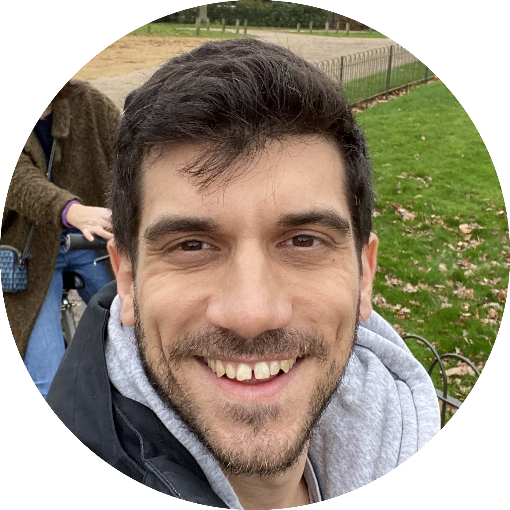

Sotiris Nousias
Welcome to my website! I am Sotiris, Postdoctoral Fellow at University of Toronto working with Prof. Kyros Kutulakos . My current research focuses on imaging and 3D reconstruction under low light conditions.
Prior to UofT, I obtained my PhD from UCL under the supervision of Dr. Christos Bergeles . During my PhD, I conducted research on structure from motion with light fields. Centuries ago, I worked on state estimation for legged robots under the supervision of Prof. Evangelos Papadopoulos.
Email /
Twitter /
Google Scholar

Research
I'm interested in computer vision, computational photography and neural fields. Much of my research is focused on 3D reconstruction.
Your browser does not support the video tag.
Transient Neural Radiance Fields for Lidar View Synthesis and 3D Reconstruction
Anagh Malik , Parsa Mirdehghan , Sotiris Nousias , Kiriakos N. Kutulakos , David B. Lindell
In submission , 2023
project page
/
video
/
arXiv
We introduce a method to do novel view lidar synthesis, allowing sparse view scene reconstruction.
Design and quasistatic modelling of hybrid continuum multi-arm robots
Zisos Mitros ,
S.M.Hadi Sadati ,
Sotiris Nousias ,
Lyndon Da Cruz ,
Christos Bergeles
ICRA , 2022
Novel design and modelling of continuum robots for robotic surgery.
From Calibration to Large-Scale Structure from Motion with Light Fields
Sotirios D. Nousias
University College London , 2021
PhD Thesis
Examiners:
Prof. Andrew Davison ,
Dr Fransisco Vasconcelos
A linear approach to absolute pose estimation for light fields
Sotiris Nousias ,
Manolis Lourakis ,
Pearse Keane ,
Sebastien Ourselin ,
Christos Bergeles
3DV , 2020
Absolute pose estimation for light fields using 4 correspondences.
Your browser does not support the video tag.
Large-scale, metric structure from motion for unordered light fields
Sotiris Nousias ,
Manolis Lourakis ,
Christos Bergeles
CVPR , 2019
Large scale structure from motion framework for metric 3D reconstruction using light fields.
A Theory of Fermat Paths for Non-Line-of-Sight Shape Reconstruction
Shumian Xin ,
Sotiris Nousias ,
Kyriakos N. Kutulakos ,
Aswin C. Sankaranarayanan ,
Srinivasa G. Narasimhan ,
Ioannis Gkioulekas
CVPR , 2019 (Oral Presentation, Best Paper Award)
NLOS shape reconstruction.
Part-to-whole Registration of Histology and MRI using Shape Elements
Sotiris Nousias , Tarek Yousry, Sebastien Ourselin, Marc Modat
ICCV Workshops , 2017
Registration of different modalities in medical images using level-lines.
Corner-based Geometric Calibration of Multi-focus plenoptic cameras
Sotiris Nousias ,
Francois Chadebecq ,
Jonas Pichat ,
Pearse Keane ,
Sebastien Ourselin ,
Christos Bergeles
ICCV , 2017
Calibration of plenoptic cameras using checkerboards.
Quadruped Robot Roll and Pitch Estimation using an Unscented Kalman Filter
Sotiris Nousias ,
Evangelos Papadopoulos
Med. Conf. on Control and Automation , 2016
Estimation of a quadruped's roll and pitch using an IMU and leg kinematics.

{kind=link}